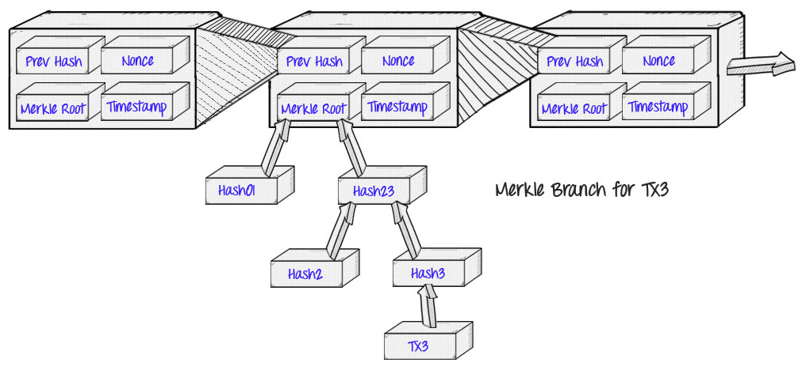

Understand Blockchain - Beginner to Advanced - Part 1
Introduction
This article introduces you to the distributed ledger technologies (DLT), this includes blockchain too.
What you will learn :-
- Blockchain and DLT
Growth of Distributed Ledger Technologies
Let’s get back to late nineties were computers filled the entire room. Mainframes were more centralized in nature that would serve the entire building. The access was through dumb terminals which does I/O operations without much of storage and processing.
With the invention of PC’s similar computational capabilities were now housed both on the clients, as well as the servers. This gave rise to ‘client-server’ architecture, which supported the development of relational database systems. Massive data sets, which are housed on mainframes, could move onto a distributed architecture. This data could replicate from server to server, and subsets of the data could be accessed and processed on clients, and then, synced back to the server.
As time went by, Internet and cloud architecture enabled global access using various devices.There are two major problems with cloud computing:
(a) users don’t own their own data, and
(b) remote servers are security holes.
With a move away from cloud computing, decentralized systems like Bitcoin give explicit control of digital assets to end-users and remove the need to trust any third-party servers and infrastructure.
give explicit control of digital assets to end-users and remove the need to trust any third-party servers and infrastructure
Distributed Ledger Technology (DLT)
A “distributed ledger” is another term for a blockchain. It distributes a database (a ledger) of transactions to all participants in a network (also called “peers” or “nodes”). There is no central administrator or centralised data storage.
Distributed ledgers existed prior to Bitcoin, the Bitcoin blockchain marks the convergence of a host of technologies, including time-stamping of transactions, Peer-to-Peer (P2P) networks, cryptography, and shared computational power, along with a new consensus algorithm.
In summary, distributed ledger technology generally consists of three basic components:
- A data model that captures the current state of the ledger
- A language of transactions that changes the ledger state
- A protocol used to build consensus among participants around which transactions will be accepted, and in what order, by the ledger.
Blockchains
As per wikipedia,
A blockchain, originally block chain, is a continuously growing list of records, called blocks, which are linked and secured using cryptography. Each block typically contains a cryptographic hash of the previous block, a timestamp and transaction data
My way of defining
Blockchain is typically a distributed ledger in combination with smart contracts and other assistive technologies. Distribution of ledger happens by various consensus algorithm.
Smart contracts are simply computer programs that execute predefined actions when certain conditions within the system are met. You can imagine it as a logical IF statement.
if(both parties agree){execute certain instructions}
Consensus refers to a system of ensuring that parties agree to a certain state of the system as the true state.
Blockchain is constructed by sequential order of blocks, hence the name block-chain. A block refers to set of transactions that are bundled together and added to the chain at same time. In bitcoin network miners cluster unconfirmed and valid transactions into a block. Each block has a size limit and contain a given number of transactions . In bitcoin network miner nodes must solve cryptographic challenge to move to the next block. This process in known as** “Proof of Work” **and this requires significant computing power to solve cryptographic problem.
Blockchain Time-Stamping
Timestamping is a major feature of blockchain technology. Here each block is timestamped, with every new block being reffered to the previous block. Combined with cryptographic hashes, this timestamped chain of blocks provides an immutable record of all transactions in the network, from the very first (or genesis) block.

A block in the blockchain network commonly consists of following metadata :-
- Timestamp
- Nonce (proof of work)
- Merkle Root for transactions in the block
- Reference to previous block
Merkle Tree
The Merkle tree, also known as a binary hash tree, is a data structure that is used to store hashes of the individual data in large datasets in a way to make the verification of the dataset efficient. It is an anti-tamper mechanism to ensure that the large dataset has not been changed.
“Merkle trees are used to summarize all the transactions in a block, producing an overall digital fingerprint of the entire set of transactions, providing a very efficient process to verify whether a transaction is included in a block.”
Difference between Blockchain and Database

There are some key disimilarities between blockchain and traditional database.
Blockchain is read-only architecture, where as in database data can be read , modifed and deleted. Every new block gets appended to the block chain by linking to the previous block’s ‘hash’. There are no administrator permissions within a blockchain that allow editing or deleting of data.
Blockchains were designed for decentralized applications, whereas relational databases, in general, were originally designed for centralized applications, where a single entity controls the data.
#
Subscribe to SriramJ's Blog
Get the latest posts delivered right to your inbox